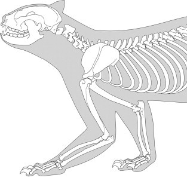
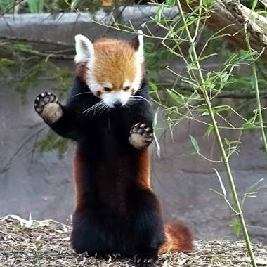
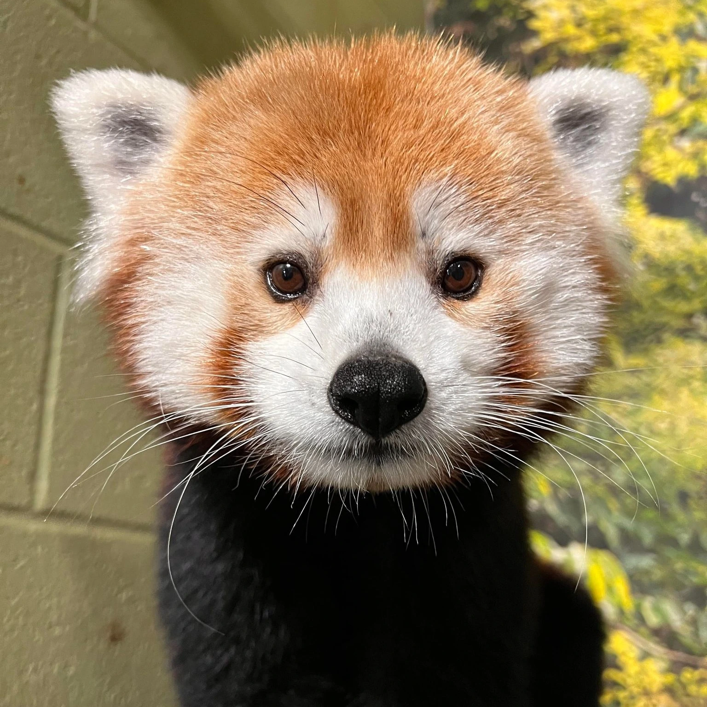
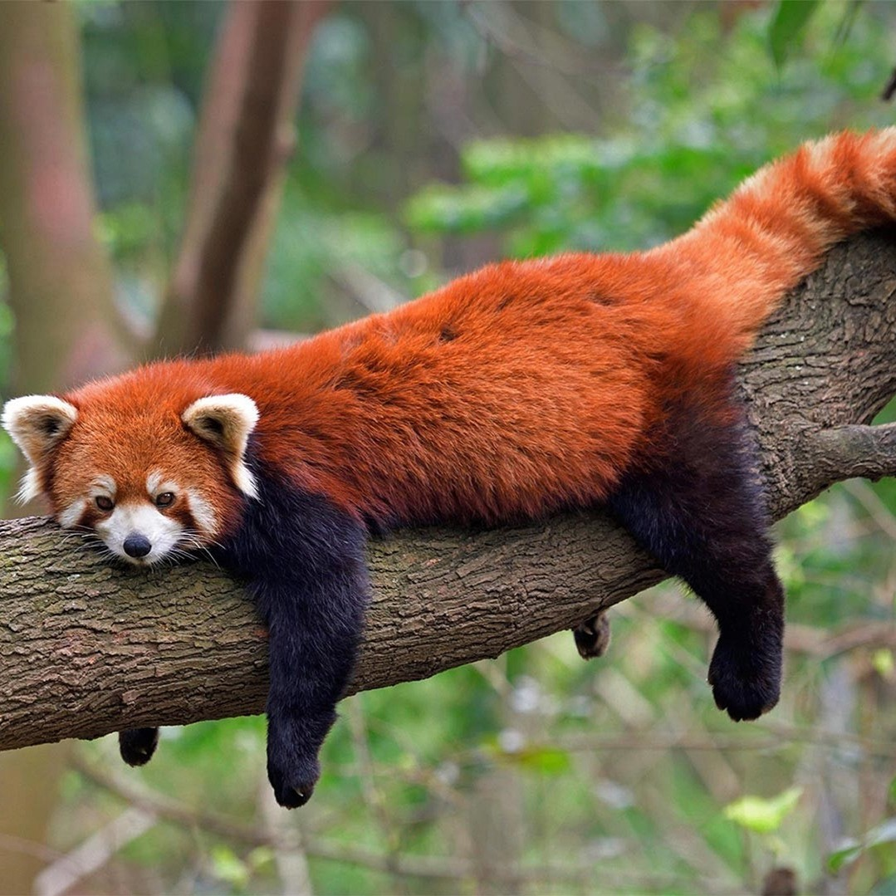

Evolution
Based on their name, most assume that red pandas are probably related to pandas. But the truth is, they are more closely related to racoons! This becomes more apparent when you see the similarities in their apperances, such as the striped tail, body size, and facial patterns. There are two separate red panda species, the Himalayan Red Panda (Ailurus fulgens fulgens) and the Chinese Red Panda (Ailurus fulgens styani).
Physical Characteristics
Red pandas are 20-25 inches long, not including their tails which add about another foot in length. Red pandas have a very interesting feature on their front paws. In addition to their five fingers, they have a false thumb used to hold on to tree branches and grab bamboo. This "false thumb" is actually an elongated wrist bone.
Endangered
Sadly, red pandas are an endangered species. There are less than 10,000 red pandas left in the wild. According to the IUCN Red List, the red panda population is still decreasing. This is mostly due to habitat loss caused by humans using the land for personal reasons. Their populations have dwindled because of poaching as well.
Images



